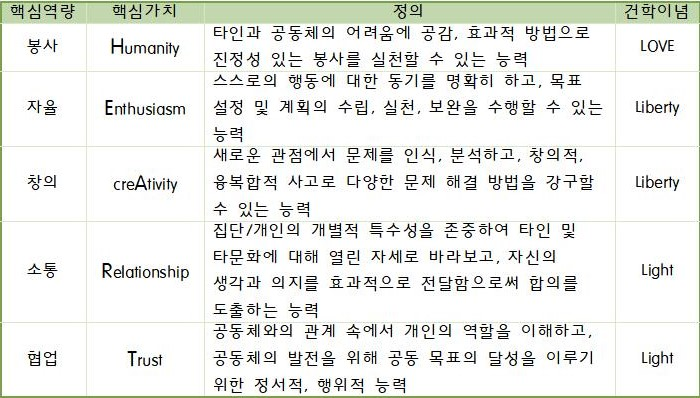

DAEGU UNIVERSITY
38453) 경상북도 경산시 진량읍 대구대로 201 · (053) 850 - 5000
사랑·빛·자유의 건학정신을 바탕으로 발전과 성취를 거듭해 온 아름다운 대학
사랑·빛·자유의 건학정신을 바탕으로 발전과 성취를 거듭해 온 아름다운 대학
"사랑·빛·자유"는 기독교적 인류애를 바탕으로 진리 추구와 사회 정의 실현이라는 대구대학교의 건학정신을 상징한다. 인류 복지와 개인 행복의 조화로운 실현은 인간에 대한 끊임없는 사랑, 정의사회 구현이라는 어둠을 밝히는 빛, 그리고 이 세상 모든 속박에서 해방되는 자유를 통하여 이룰 수 있다. 이와 같은 건학이념의 구현을 위해 오늘도 대구대학교는 힘찬 웅지와 따뜻한 지성을 가진 인재를 양성하고 있다.
"큰뜻을 품어라"고 하는 교훈은 인간애의 정신적 바탕위에 만인의 복지와 개인의 행복을 조화시킬 수 있는 높은 이상과 실천의 힘을 가진 역군이 되어 국가와 사회를 위하여 헌신하자는 뜻이다.
잘못된 시각에 의해편견과 차별 속에서 고통받고 있는 사람들에 대해 재활과 복지증진으로 질 높은 삶을 살아갈 수 있게 해야...
① 유능한 전문직업인, ② 선도적 복지인재, ③ 진취적 민주시민
이라는 교육목표의 달성을 위하여 대학의 환경변화 및 역량분석을 통하여 ‘소통과 헌신의 DU-HEART 인재’의 인재상을 설정
사회과학대학(College of Social Sciences)은 사회학과, 국제관계학과, 심리학과, 가정복지학과, 산업복지학과, 사회복지학과, 미디어커뮤니케이션학과, 문헌정보학과 등 8개의 학문 영역을 교육하고 연구합니다. 4차 산업혁명이라는 문명사적 대전환에 유기적으로 접목될 수 있는 스토리렐링형 창의인재 양성을 향한 융합적 사회과학 교육의 표준을 일구어 나갑니다.
본 학과는 1964년 3월에 개설된 이래 50여년의 역사 속에 5,000여명의 사회복지사를 배출하여 전국 사회복지현장에서 활동하고 있다. 또한 1974년 대학원에 석사학위과정, 1977년 박사학위과을 개설하였고, 1982년에 사회복지개발대학원에 석사학위과정을 개설하여 현재까지 500여명의 사회복지계의 지도자를 양성해 오고 있다. 이들 가운데 130여 명은 현재 전국 대학의 사회복지학과 및 사회복지과에서 후학들을 지도하는 교수로 활동 중이다. 본 학과는 급증하는 사회복지문제와 복지수요에 대처할 수 있는 유능한 사회복지 전문인력의 양성을 위하여 인간 고통과 문제 해결에 관한 이론체계의 습득, 이론의 현장 적용력 배양을 교육목표로 연구·교육하고 있다.
사회복지학과를 졸업하면 사회복지사2급(1급 자격취득은 2003년도 국가고시에 의함)자격을 취득하게 되며 다음과 같은 분야로 진출할 수 있게 된다. 우선 사회복지전담공무원과 공공기관(국민건강보험공단, 국민연금공단, 근로복지공단 등)에 진출할 수 있게 되며, 종합사회복지관 및 장애인복지관, 노인복지관 등의 분야별 사회복지관과 아동양육시설, 장애인재활시설, 상담소 등의 다양한 사회복지관련시설 및 기관에서 전문적인 사회복지사로 종사하거나 본인이 직접 운영할 수도 있다. 또한, 의료사회복지사나 정신보건사회복지사로도 활동할 수 있으며, 교정사회복지사, 학교사회복지사, 산업사회복지사, 군사회복지사 등으로도 사회복지사의 영역이 점차 확대될 예정인 만큼 졸업생의 취업분야 및 취업률이 높은 것이 사회복지학과의 자랑이다.
- 인간고통의 해결을 위한 사회복지 가치체계 형성
- 사회복지 문제 해결에 관한 지식체계 함양
- 사회복지실천 현장에 대한 적용력 배양
굿인은 ‘좋은’의 GOOD과 사람 인(人) 자를 합쳐, 좋은 사람이라는 뜻입니다. 굿인은 2011년 대구대학교 사회복지학과와 굿네이버스 대구서부지부의 산학협력을 통해 설립된 동아리로 사회복지학과 내 아동 권리 옹호를 목표로 하는 동아리입니다. 이를 위해 아동복지에 대한 전문적 지식을 습득할 수 있는 스터디 진행, 배운 것을 실하기 위한 봉사활동, 아동학대 예방·인식개선 캠페인 활동 및 UCC 제작 활동을 합니다.
이플하랑은 우리들 주변에서 누구에게나 일어날 수 있는 혹은 실제로 겪고 있을지도 모르는 사회문제에 대해 관심을 가지고 학우들이 연구하는 동아리로서 “사회초년생의 세상 밖 걸음마”라는 슬로건을 가지고 활동하는 사회문제 연구, 토론 및 참여 동아리입니다.
SOCIO 동아리는 대구대학교 사회복지학과내 동아리로 전통 있는 사회극 동아리입니다. 사회복지실천영역에서 많이 접근되어지며, 동아리활동을 통해서 사회복지실천, 기술 등을 이해하고 더 나아가서는 전문기술을 접할 수 있는 동아리입니다. 우리사회에서 일어나는 사회문제에 대해 서로의 생각과 이야기를 주고받으며 그 내용을 토대로 한 사회극(socio drama)을 통해 즉흥적으로 표현합니다. 극을 시연하는 사람에겐 자신의 입장이 아닌 그 역할의 입장이 되어 생각할 수 있게 하고, 대중들에겐 생각의 기회를 줌으로써 사회문제에 대한 해결방안을 찾아보고, 굳이 해결방안을 찾지 않더라도 이야기를 통해서 각자의 생각을 자유롭게 표현하는 동아리입니다.
대구대학교 사회복지학과 동아리 ‘효경회’는 1983년 4월 28일에 설립 된 봉사동아리로, 봉사를 주 활동으로 하며 그 외에도 선후배 및 동기 간 친목 도모를 목적으로 정기모임을 가지고 있는 동아리입니다.
‘널리 열어 나아간다.’는 뜻의 ❰열림마당❱은 1989년에 만들어진 사회복지학과 내 역사와 전통 있는 토론 동아리입니다. 처음에는 학교생활을 하면서 학내에서 발견되는 문제점을 학교 측에 개선하도록 요구하는 성격을 가진 학생권리 주장을 위한 모임으로 시작하여 현재는 장르를 불문하여 다양하게 활동하는 ‘토론 동아리’로 그 역사와 전통을 이어 나가고 있습니다. 또한 2015년부터 ‘스피치’ 방식을 도입하여 동아리의 구성방식을 발전시켜나가고 있습니다.
CMHV는 Community Mental Health Volunteers의 머리글자를 따서 만든 것이며, 이를 우리말로 해석하면 ‘한국 지역사회 정신건강 자원봉사단’입니다. 정신 장애인들이 한 명의 인간으로서 사회에서 당당하게 자신의 몫을 찾고 살아갈 수 있도록 존중되는 사회, 자유롭고 친근한 환경에서 치료와 재활을 받을 수 있는 사회를 만들고자 그 뜻을 함께 하는 사람들이 모인 단체입니다. 이를 위해 정신 건강 문제에 대해 알기 위한 스터디와 자원봉사, 정신 장애인의 인식 개선 및 권리옹호를 위한 어우르기 등의 활동을 하고 있습니다.
사회복지학과 유일한 체육 동아리S.W(Social Welfare) 입니다. 모든 사회복지학과생들이 즐길 수 있도록 유일하게 중복가입이 가능한 동아리입니다. S.W는 체육활동을 통해 심신단련 및 친목도모를 하는 전통 있는 동아리입니다.
안녕하세요! 저는 사회복지학과에 재학중인 4학년 이수빈입니다
저는 고등학교 1학년부터 봉사에 대해 흥미를 보였고,
사회복지학과에 입학을 결심하게 되었습니다.
사회복지학과라고 하면 다들 좋은 일, 착한 일이라고
생각하기 쉽지만 사회복지는 다양한 사회적,
개인적 욕구를 지닌 사람들의 문제를 사정하고 문제해결을 위해 그들의 편에 서서 일하는 전문가라고 생각합니다.
사회복지사라는 꿈을 향해 따뜻한 배려와 때론
차가운 이성을 갖추려고 노력중에 있습니다.